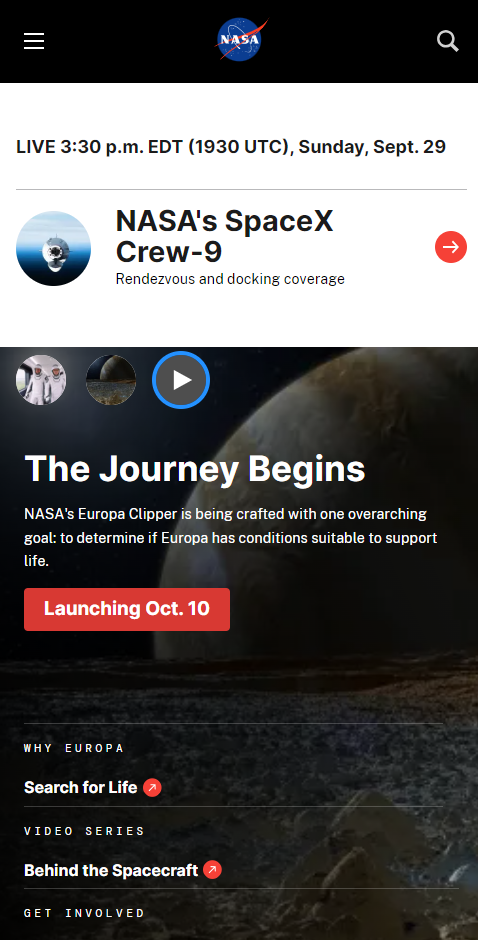
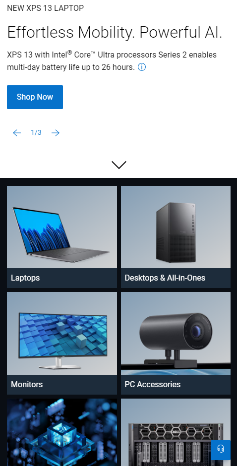
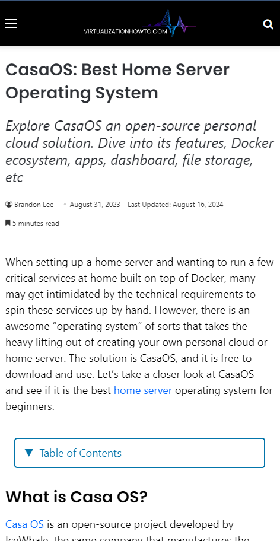

Visual Hierarchy
NASA
This page demonstrates visual heirarchy by displaying emphasizing the size of the article in the carousel of articles on the site. The links below are older articles, but they are still fresh enough to be relevant.
Proximity
DELL
This page demonstrates the principle of proximity by aligning the categories of hardware for sale in boxes that are evenly spaced.
White Space and Clean Design
Virtualization How-to Blog
In my opinion, this blog page illustrates the principle of white space and clean design by how its layout and typesetting are spaced and leave a good amount of white space between each of the headings.
The design is about as clean as it gets. I like the simple header graphic with the website URL and the stylish gradiated logo.